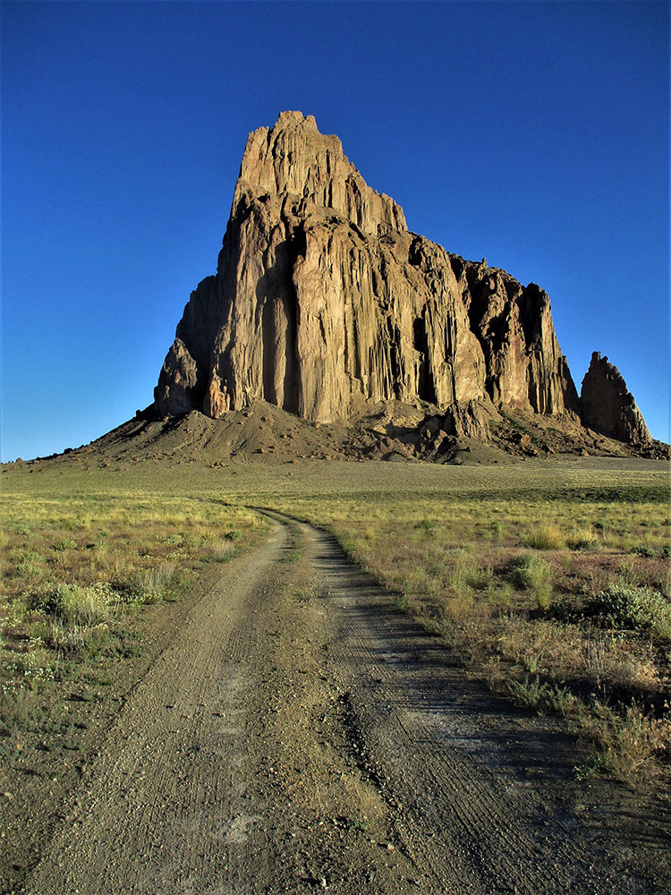
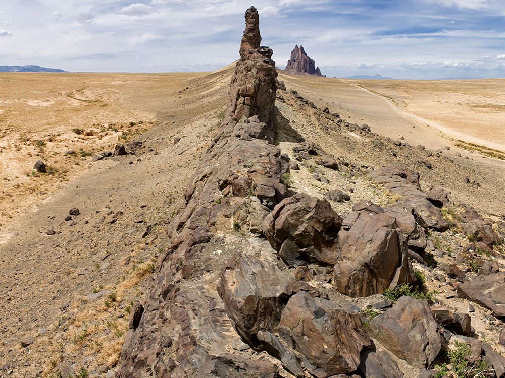
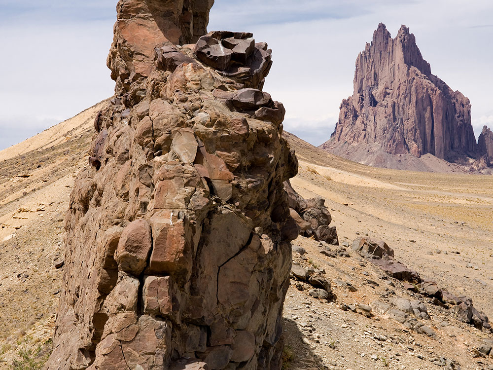
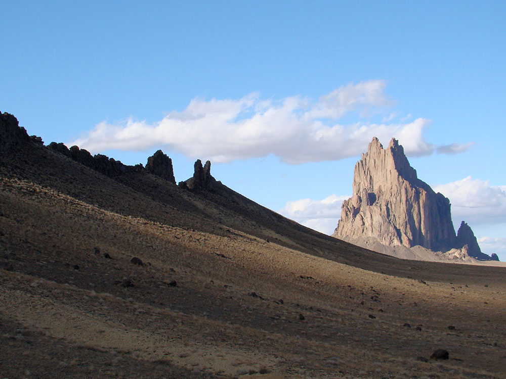

Towering volcanic monolith rising dramatically from the desert floor with radiating rock formations extending across the surrounding landscape.
No on-site facilities or visitor services available
How to Get There
From Farmington (28 mi): Take US-64 W to US-491 N and continue south toward Shiprock, where the formation becomes visible from the highway and nearby paved viewpoints.
Overview
The Shiprock formation, known to the Navajo as Tsé Bitʼaʼí or “Rock with Wings,” rises nearly 1,600 feet above the surrounding high desert as a striking remnant of an ancient volcano. Formed approximately 27 million years ago, this hardened volcanic neck is surrounded by long, narrow ridges of rock that radiate outward like wings, creating one of the most recognizable geological landmarks in the American Southwest. Visible from miles away, the monolith appears almost surreal against the flat desert landscape, making it a favorite subject for photographers and travelers passing through the region.
Beyond its dramatic appearance, the formation holds deep cultural and spiritual significance for the Navajo Nation, where it is considered a sacred site tied to origin stories and traditional beliefs. Access to the base and climbing on the rock are prohibited out of respect, and visitors are expected to observe the landmark from designated roads and viewpoints. Despite these restrictions, the experience of seeing the formation—especially at sunrise or sunset when it glows against the desert sky—offers a powerful and memorable connection to both natural history and living cultural traditions.
This article uses material from the Wikipedia articles and official tourism pages for the Shiprock formation, which are released under the Creative Commons Attribution-Share-Alike License 3.0.
Navajo-Guided Tours
Guided tours led by Navajo operators provide one of the few ways to experience the area beyond roadside viewing while respecting cultural and legal restrictions. These tours typically involve small groups traveling by vehicle along designated routes, with stops at scenic viewpoints that offer closer perspectives of the formation without approaching the base. Guides share cultural stories, history, and geological insights, creating a deeper understanding of the landmark and its significance.
Tours usually last between 3 to 5 hours and include multiple photography stops, as well as light walking between viewpoints rather than traditional hiking. Visitors cannot climb, hike to, or directly access the formation even with a guide, as it remains a protected sacred site where such activities are prohibited. Most tours depart from areas near Farmington or along US-491 and may require guests to use their own vehicle or arrange transportation in advance. Guided experiences provide a unique opportunity to learn about Navajo traditions while safely exploring the surrounding landscape.
Tour Details
Typical Duration: 3–5 hours
Activities Included: Scenic drives, photography stops, cultural interpretation, light walking
Group Size: Small groups (typically 8–10 people)
Approximate Cost: Around $140 per adult, with reduced rates for youth
Important Restrictions
Climbing, hiking to the base, and off-road access are strictly prohibited due to the site's sacred status and local regulations.
Visitors must remain on approved routes and follow all guidance provided by Navajo authorities and tour operators.
Drone use requires special permits, and overnight camping in the immediate area is not allowed.
Best Time to Visit
Spring and fall offer the most comfortable temperatures and best lighting conditions for photography.
Additional Information
Shiprock (Navajo: Tsé Bit'a'í, "rock with wings" or "winged rock") is a monadnock rising nearly 1,583 feet (482.5 m) above the high-desert plain of the Navajo Nation in San Juan County, New Mexico. Its peak elevation is 7,177 feet (2,187.5 m) above sea level. It is about 10.75 miles (17.30 km) southwest of the town of Shiprock, which is named for the peak.
Governed by the Navajo Nation, the formation is in the Four Corners region and plays a significant role in Navajo religion, myth, and tradition. It is located in the center of the area occupied by the Ancient Pueblo People, a prehistoric Native American culture of the Southwest United States often referred to as the Anasazi. Shiprock is a point of interest for rock climbers and photographers and has been featured in several film productions and novels. It is the most prominent landmark in northwestern New Mexico. In 1975, Shiprock was designated as a National Natural Landmark by the National Park Service.
Name
The Navajo name for the peak, Tsé Bit'a'í, "rock with wings" or "winged rock", refers to the legend of the great bird that brought the Navajo from the north to their present lands. The name "Shiprock" or Shiprock Peak or Ship Rock derives from the peak's resemblance to an enormous 19th-century clipper ship. Americans first called the peak "The Needle", a name given to the topmost pinnacle by Captain J. F. McComb in 1860. United States Geological Survey maps indicate that the name "Ship Rock" dates from the 1870s.
Geology
Shiprock is composed of fractured volcanic breccia and black dikes of igneous rock called minette, a type of lamprophyre. It is the erosional remnant of the throat of a volcano, and the volcanic breccia formed in a diatreme. The rock probably was originally formed 2,500-3,000 feet (750-1,000 meters) below the Earth's surface, but it was exposed after millions of years of erosion. Wall-like sheets of minette, known as dikes, radiate away from the central formation. Radiometric age determinations of the minette establish that these volcanic rocks solidified about 27 million years ago. Shiprock is in the northeastern part of the Navajo volcanic field—a field that includes intrusions and flows of minette and other unusual igneous rocks that formed about 30 million years ago. Agathla (El Capitan) in Monument Valley is another prominent volcanic neck in this volcanic field.
Climbing history and legal status
The first ascent was in 1939, by a Sierra Club party including David Brower, Raffi Bedayn, Bestor Robinson and John Dyer. This was the first climb in the United States to use expansion bolts for protection. Pitons were used for direct aid. This first ascent route is featured in the book Fifty Classic Climbs of North America.
Since then at least seven routes have been climbed on the peak, all of them of great technical difficulty. A modification of the original route is recorded as the easiest, and it is rated as Grade IV, YDS 5.9, A1. It was considered a great unsolved problem by the climbing community in the 1920s and 1930s. At that time there was a widespread rumor of a $1000 prize for climbing the peak, which inspired "dozens of attempts by the experienced and inexperienced alike".
The idea of climbing Shiprock is repugnant to many Navajo people. Climbing has been illegal since 1970.
Serious injuries to three climbers in March 1970 caused the Navajo Nation to ban rock climbing not only on Shiprock but all over the Navajo Nation on monoliths, spires and within tribal parks under the jurisdiction of Navajo Parks & Recreation. The Navajo Nation announced that the ban was "absolute, final and unconditional".
Shiprock and the surrounding land have religious and historical significance to the Navajo people. It is mentioned in many of their myths and legends. Foremost is the peak's role as the agent that brought the Navajo to the southwest. According to one legend, after being transported from another place, the Navajos lived on the monolith, "coming down only to plant their fields and get water." One day, the peak was struck by lightning, obliterating the trail and leaving only a sheer cliff, and stranding the women and children on top to starve. The presence of people on the peak is forbidden "for fear they might stir up the chį́įdii (ghosts), or rob their corpses."
Navajo legend puts the peak in a larger geographic context. Shiprock is said to be either a medicine pouch or a bow carried by the "Goods of Value Mountain", a large mythic male figure comprising several mountain features throughout the region. The Chuska Mountains comprise the body, Chuska Peak is the head, the Carrizo Mountains are the legs, and Beautiful Mountain is the feet.
Navajo legend has it that Bird Monsters (Tsé Ninájálééh) nested on the peak and fed on human flesh. After Monster Slayer, elder of the Warrior Twins, destroyed Déélééd at Red Mesa, he killed two adult Bird Monsters at Shiprock and changed two young ones into an eagle and an owl. The peak is mentioned in stories from the Enemy Side Ceremony and the Navajo Mountain Chant, and is associated with the Bead Chant and the Naayee'ee Ceremony. There are a number of other legends regarding what the Shiprock pinnacle might be.
This article uses material from the Wikipedia article "Shiprock", which is released under the Creative Commons Attribution-Share-Alike License 3.0

.jpg){kind=link}


.jpg){kind=link}
